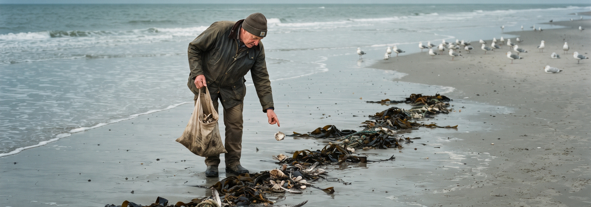

The Strandline. A command line tool that lists every line of one Python file that mentions a watched keyword, records each line in full, and runs bandit over the same file.
The word inside a comment or a longer name counts; the capitalised spelling does not. The two bandit thresholds are passed straight to bandit's own flags and default to MEDIUM, as the code's help text states; the README parameter list gives the thresholds and the keyword option as No description provided.
Option
What it does
--source_file
The Python file to read. Required.
--sensitive_data
The comma separated keywords to watch for. Required.
--output_file
Where the report is saved.
--log_file
Where the log is written.
--bandit_severity_threshold
Bandit's severity floor. Default MEDIUM.
--bandit_confidence_threshold
Bandit's confidence floor. Default MEDIUM.

The whole line walked, item by item, nothing skipped.
What the tool does not do
No data flow is traced. The name and the GitHub description promise flow tracing and the identification of leaks, and the code does neither: it matches substrings and lists lines.
No line is judged beyond the match itself. A keyword in a comment counts exactly like one in code.
Matched lines are written into the report in full, so a real secret sitting on a matched line lands in the report file in full. Treat the report as sensitive.
Bandit is the only judgement in the run, and it is bandit's, relayed with its status.
Requirements
Python with bandit, the external scanner main.py invokes by name; the requirements file lists it under a comment.